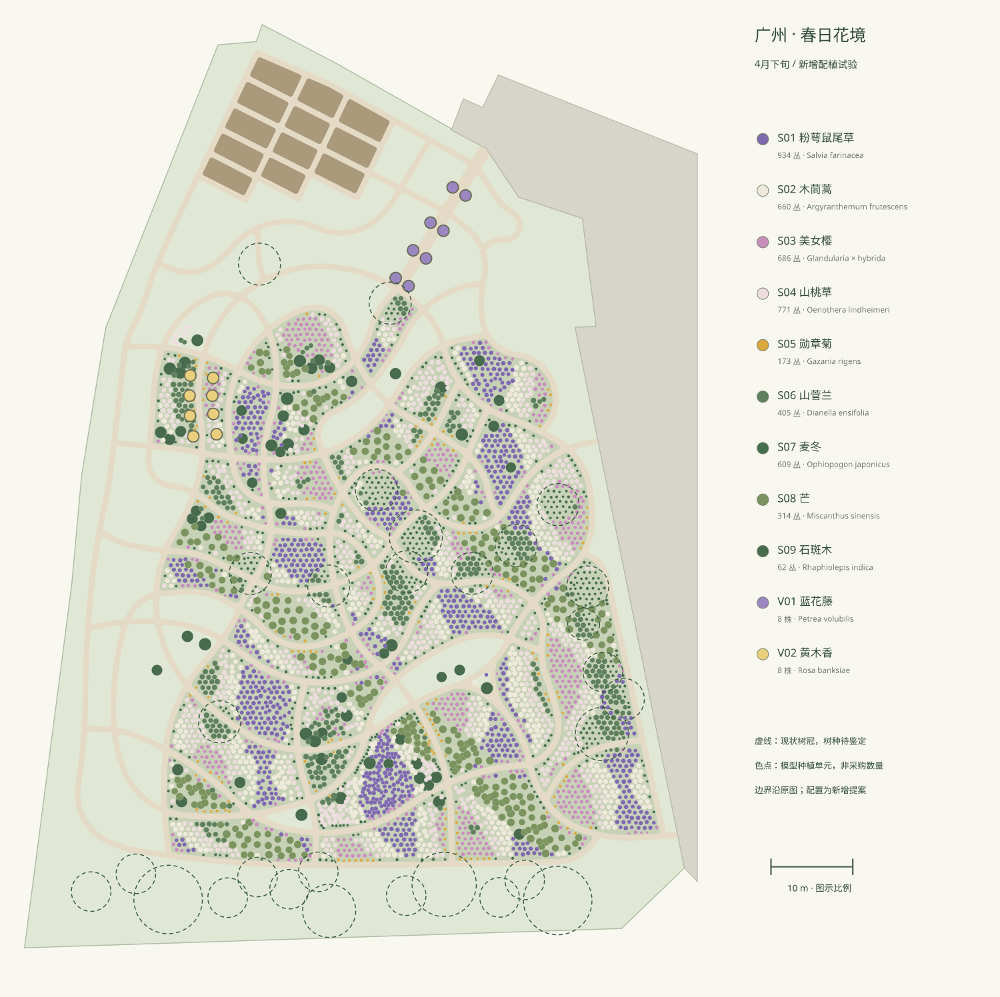

ZHIPIN GARDEN / SPRING PALETTE 02
广州春日，种什么。
春季 · 4月下旬 · 11 项拟选植物。蓝紫与白色花团反复出现，淡粉小花穿插，金黄色少量点缀；以绿叶草丛、剑形叶和低地被连接各层。本清单为新增配植提案，未识别原图中的真实树种。

| 植物 / 拟选类型 | 科 | 属 | 种 / 杂交类群 | 春季状态与表现尺寸 | 数量 | 管理及来源 |
|---|---|---|---|---|---|---|
| S01粉萼鼠尾草蓝紫花类型，具体栽培品种待苗源确认在模型中定位 ↗ | 唇形科Lamiaceae | 鼠尾草属Salvia | Salvia farinacea种 | 表现蓝紫色轮伞花序；春夏开花资料支持本季选用表现高度 0.68 m · 冠幅 0.54 m | 934丛 · 模型布置 | 向阳、通风；避免长期积水，花后修剪。分类依据 ↗ · 物候 / 园艺依据 ↗ |
| S02木茼蒿单瓣白花类型，具体栽培品种待苗源确认在模型中定位 ↗ | 菊科Asteraceae | 木茼蒿属Argyranthemum | Argyranthemum frutescens种 | 冬春季草花配置；不假定能在广州盛夏维持同等花量表现高度 0.58 m · 冠幅 0.60 m | 660丛 · 模型布置 | 作为春季补色植物；雨季注意排水，入夏评估替换。分类依据 ↗ · 物候 / 园艺依据 ↗ |
| S03美女樱柔粉花类型，具体栽培品种待苗源确认在模型中定位 ↗ | 马鞭草科Verbenaceae | 美女樱属Glandularia | Glandularia × hybrida人工杂交类群；旧名 Verbena × hybrida | 春季草花；不能将此人工杂交类群写成自然种表现高度 0.25 m · 冠幅 0.48 m | 686丛 · 模型布置 | 向阳、排水良好；花后轻剪，入夏核对耐热苗源。分类依据 ↗ · 物候 / 园艺依据 ↗ |
| S04山桃草白花转淡粉类型，具体栽培品种待苗源确认在模型中定位 ↗ | 柳叶菜科Onagraceae | 月见草属Oenothera | Oenothera lindheimeri种；旧名 Gaura lindheimeri | 参考广州园林科技推广资料，表现少量白粉小花；不采用满枝同步盛花表现高度 0.94 m · 冠幅 0.55 m | 771丛 · 模型布置 | 向阳、通风；雨后检查倒伏，适度疏剪。分类依据 ↗ · 物候 / 园艺依据 ↗ |
| S05勋章菊金黄花、褐色基部眼斑类型，苗源待确认在模型中定位 ↗ | 菊科Asteraceae | 勋章菊属Gazania | Gazania rigens种 | 表现春末晴天白日开花状态；阴雨天花朵不一定展开表现高度 0.28 m · 冠幅 0.38 m | 173丛 · 模型布置 | 仅用于排水良好的向阳边缘；连续雨季与盛夏评估替换。分类依据 ↗ · 物候 / 园艺依据 ↗ |
| S06山菅兰绿叶原色类型，不冒称花叶品种在模型中定位 ↗ | 阿福花科Asphodelaceae | 山菅兰属Dianella | Dianella ensifolia种 | 春季以绿叶为主，点缀稀疏分枝小花序，不添加成熟蓝果表现高度 0.64 m · 冠幅 0.66 m | 405丛 · 模型布置 | 树冠边缘和明亮半阴处；避免根部长期积水。分类依据 ↗ · 物候 / 园艺依据 ↗ |
| S07麦冬普通绿叶类型在模型中定位 ↗ | 天门冬科Asparagaceae | 沿阶草属Ophiopogon | Ophiopogon japonicus种 | 仅表现绿叶，无花序和果实表现高度 0.24 m · 冠幅 0.36 m | 609丛 · 模型布置 | 用于树下及半阴边缘；避免覆土埋心。分类依据 ↗ · 物候 / 园艺依据 ↗ |
| S08芒绿叶类型；株高为春季抽叶修剪状态在模型中定位 ↗ | 禾本科Poaceae | 芒属Miscanthus | Miscanthus sinensis种 | 春季新叶，不生成秋季花穗；深圳植物志记载花果期7—12月表现高度 1.02 m · 冠幅 0.92 m | 314丛 · 模型布置 | 保持丛间空间；冬末修剪后春季抽叶，控制向园路扩展。分类依据 ↗ · 物候 / 园艺依据 ↗ |
| S09石斑木白花类型，低枝自然灌丛在模型中定位 ↗ | 蔷薇科Rosaceae | 石斑木属Rhaphiolepis | Rhaphiolepis indica种 | 表现春季白花与少量铜红新叶表现高度 1.18 m · 冠幅 1.45 m | 62丛 · 模型布置 | 保留自然枝条，避免修成整齐球形；雨季注意通风。分类依据 ↗ · 物候 / 园艺依据 ↗ |
| V01蓝花藤蓝紫花类型在模型中定位 ↗ | 马鞭草科Verbenaceae | 蓝花藤属Petrea | Petrea volubilis种 | 4—5月花期有中国植物志及广州栽培记录支持表现高度 2.80 m · 冠幅 1.20 m | 8株 · 模型布置 | 沿拱架牵引，预留通行净空；需定期绑扎修剪。分类依据 ↗ · 物候 / 园艺依据 ↗ |
| V02黄木香拟选 Rosa banksiae 'Lutea'，苗源未确认在模型中定位 ↗ | 蔷薇科Rosaceae | 蔷薇属Rosa | Rosa banksiae 'Lutea'种及拟选栽培品种 | 表现春季一次花期；广州具体物候仍需样板试植验证表现高度 2.70 m · 冠幅 1.20 m | 8株 · 模型布置 | 生长强，限制在花架并花后修剪；不按全年反复开花月季管理。分类依据 ↗ · 物候 / 园艺依据 ↗ |
另保留：现状乔木 29 株（科属种待鉴定）、菜园 12 畦（蔬菜种类未配置）。美女樱为人工杂交类群；黄木香拟选 'Lutea'；其余花色选型未冒称已确认的栽培品种。
如何使用这份清单
模型布置单元：地栽按丛，藤本按根基计株；花序、叶片组件不重复计数。未计损耗，不作为采购数量。
- 以现有花境面域为边界；日照分区暂用现状树冠的平面投影估计，未做全年日照模拟。
- 株高、冠幅和间距为本次春季表现参数，不等同于植物最大成熟尺寸或采购规格。
- 木茼蒿、美女樱和勋章菊按春季草花管理；入夏需评估替换，不能视为全年稳定宿根。
- 假定种植区排水良好；广州春季多雨，勋章菊仅少量配置于向阳边缘，实施前核对排水。
- 花量为方案表现，实际花期受品种、苗龄、天气和养护影响；不保证同一天全园盛花。
- 保留29株现状乔木的位置与冠幅，物种继续待鉴定；菜园继续为叶丛示意。
植物配置平面
